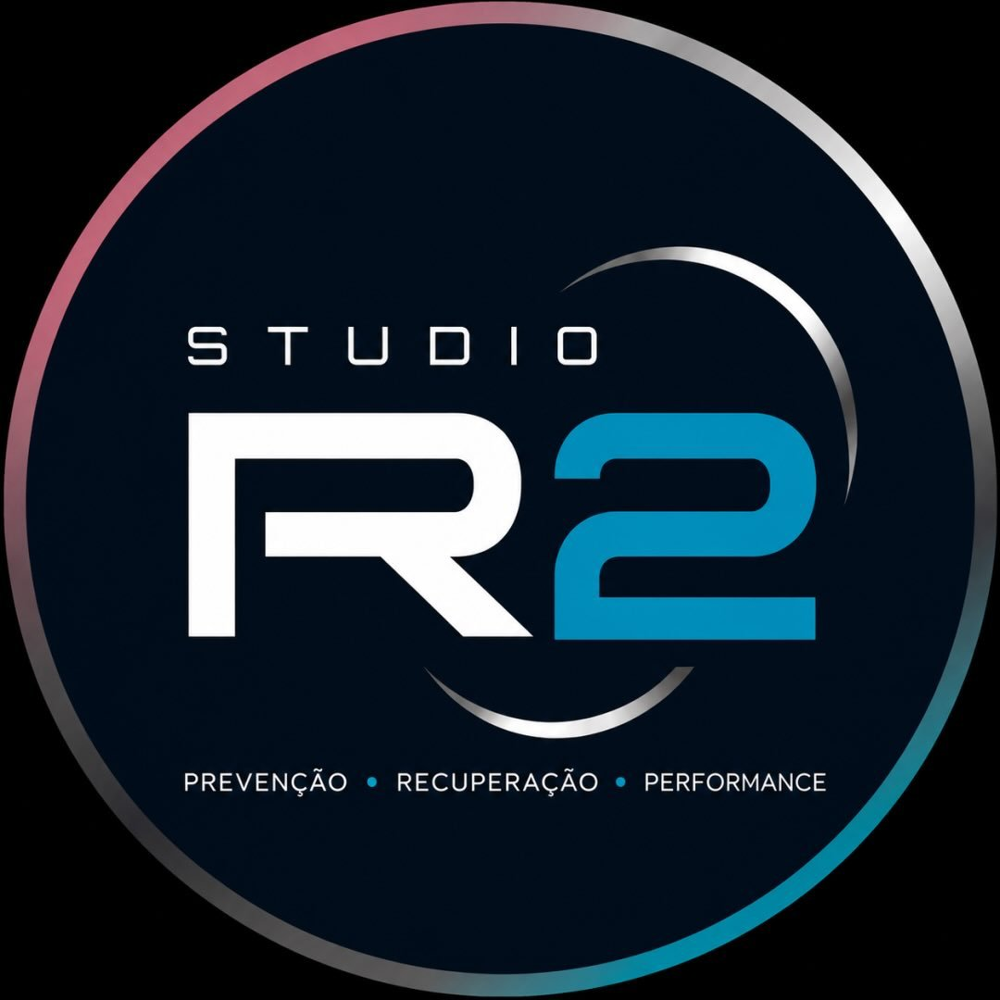
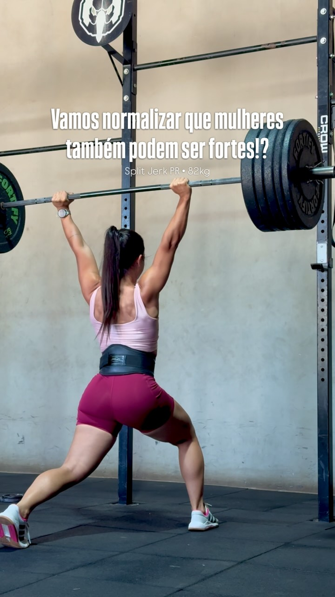
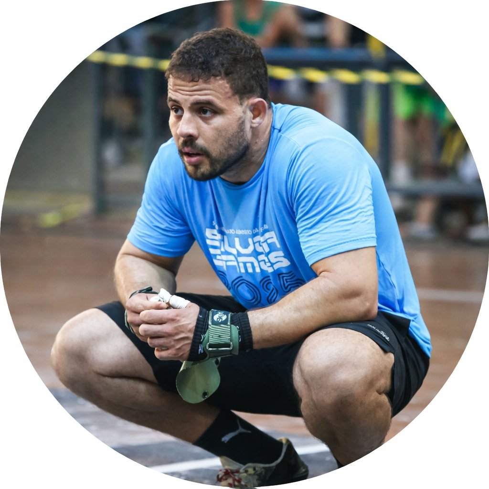
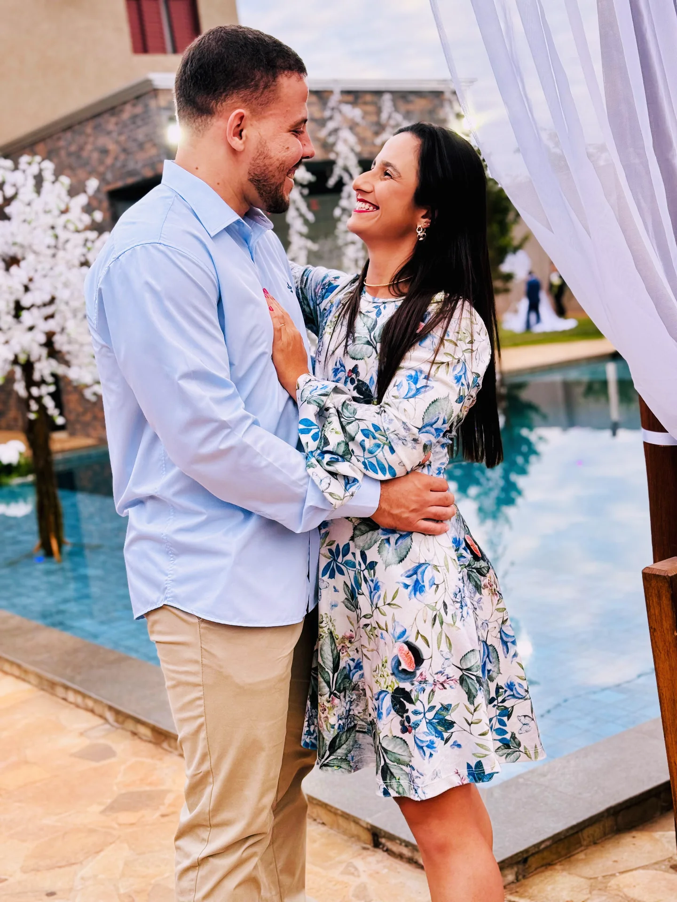

Movimento bem construído
Treinos que desenvolvem consciência, estabilidade e controle para reduzir limitações e preparar o corpo para novas demandas.

Studio R2
Treinamento esportivo · Barretos
Treinamento com estratégia para desenvolver força, confiança e capacidade de movimento — respeitando seu momento, sua rotina e seus objetivos.
O Studio R2 nasce da união entre movimento, estratégia e acompanhamento. Cada treino considera a pessoa por inteiro: o que ela consegue fazer hoje, onde quer chegar e o que precisa desenvolver para avançar com segurança e consistência.
Como trabalhamos
Mais do que repetir exercícios: construir força, controle, estabilidade, mobilidade e confiança para o esporte e para o dia a dia.
Treinos que desenvolvem consciência, estabilidade e controle para reduzir limitações e preparar o corpo para novas demandas.
Progressões adaptadas ao momento de cada aluno, respeitando limites e reconstruindo capacidade de movimento.
Preparação física para quem quer correr, lutar, competir ou simplesmente viver com mais potência e disposição.
Treinamento voltado especialmente para mulheres que buscam força, confiança, movimento sem dor e uma rotina possível de sustentar.

Atuação no acompanhamento de treinos e desenvolvimento de força, com atenção à execução, à evolução e à construção diária de performance.

Duas experiências, uma direção
Anny e Lucas unem vivência prática, estudo e acompanhamento próximo para criar treinos que façam sentido para cada pessoa.
O atendimento acontece em academias parceiras de Barretos, levando a proposta do Studio R2 até o espaço mais adequado à rotina e aos objetivos de cada aluno.
Seu próximo movimento
Converse com a Anny, conte seu objetivo e descubra como o Studio R2 pode acompanhar sua evolução.